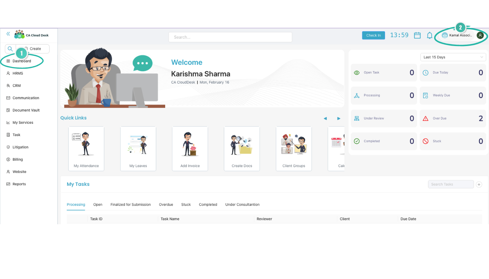
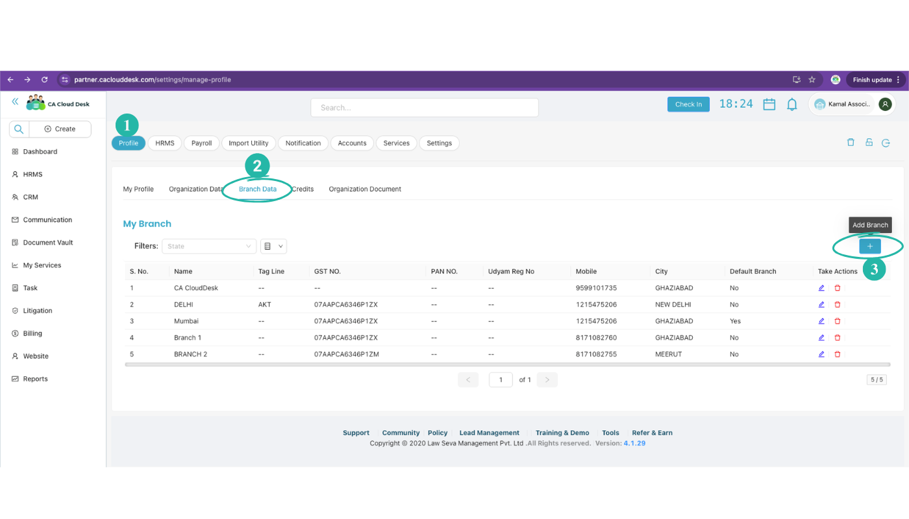
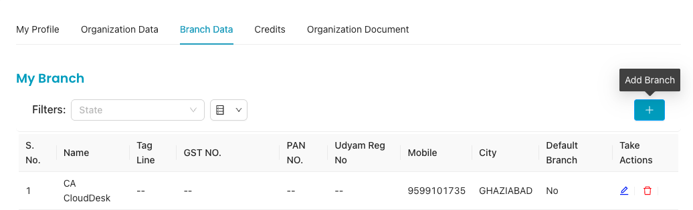
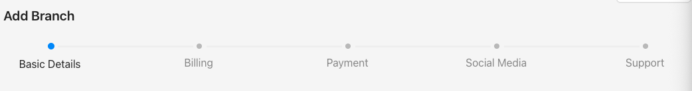

Add New Branch
Add and manage branch offices for your practice. Each branch can have its own billing configuration, GSTIN, address, and invoice series—so you can bill correctly from each location.
Overview
Branches in CA Cloud Desk let you operate billing from multiple office locations. When you create invoices, proforma, or receipts, you choose the branch—and that branch’s details (name, address, GSTIN, series) appear on the documents. Add a new branch when you open another office or need separate billing identity for a location.
Steps 1–3: Open Branch Data
Branch management is available from your profile. Follow these steps to reach the Branch Data screen.
- STEP 1: From the main Dashboard, click your profile icon in the top-right corner to open your profile area.

- STEP 2: On the Profile page, use the secondary navigation tabs and select Branch Data.

- STEP 3: Click the (+) button to start adding a new branch.

Add Branch Flow (Steps 4–6)
STEP 4: Complete the step-wise Add Branch flow. The steps are:
- Basic Details → Billing → Payment → Social Media → Support

The first step is Basic Details. Fill it in, then use Save and Next to move to Billing and complete the remaining steps to finish adding the branch.
Basic Details (Step 5)
STEP 5: In the Basic Details step, fill in the following. Where applicable, choose Yes or No. Optionally check Make this branch as default branch, then click Save and Next to proceed to Billing.
| Field | Notes |
|---|---|
| Have GST NO. | Yes / No |
| GST No. | Enter if you have GST. |
| Branch/Firm Name | Display name for the branch. |
| Branch Password | Password for this branch. |
| PAN No | Permanent Account Number. |
| Udyam Reg No | Udyam registration number (if applicable). |
| Tag Line | Optional tagline for the branch. |
| Mobile No | Branch contact number. |
| Branch email address. | |
| Permanent Address | Full address of the branch. |
| State | State for the branch. |
| City | City. |
| PIN NO. | PIN code. |
| Signature | Upload or set branch signature. |
| Logo | Upload or set branch logo. |
| Other Text | Any other text (e.g. disclaimers, notes). |
| Allow Outside Radius | Yes / No (where applicable). |
| Allow Face Recognition | Yes / No (where applicable). |
| Auto Timesheet Approval | Yes / No (where applicable). |
| Make this branch as default branch | Optional checkbox. |
STEP 6: Save and Next
After filling the Basic Details (and optionally setting default branch), click Save and Next to move to Billing. Then complete Payment, Social Media, and Support as required to finish adding the branch.
Billing, Payment, Social Media, Support
After Basic Details, the Add Branch flow continues with:
- Billing — Configure billing settings for this branch (e.g. invoice series, tax options).
- Payment — Set up payment or bank details for the branch if required.
- Social Media — Optional links or handles for the branch.
- Support — Support or contact preferences for the branch.
Complete each step and save. Once all steps are done, the new branch will be available across the app (e.g. for invoicing and reports).
Managing Branches
After adding a branch you can:
- Edit — Change name, address, GSTIN, or other details from the branch list or edit screen.
- Use in billing — Select this branch when creating invoices, proforma, or receipts so the correct details print on documents.
- Deactivate — If a branch is closed, mark it inactive so it no longer appears in selection lists; historical data stays intact.
Branch-wise reports and filters (e.g. in Reports) help you see billing by location.
Tips
GSTIN accuracy
- Ensure the branch GSTIN matches your GST certificate.
- Wrong GSTIN can cause invoice and return mismatches.
Invoice series
- If you use branch-wise series, set them up in Billing Setup and link to the branch.
- Keeps invoice numbers unique and easy to identify by location.
Video Tutorial
Watch this video for a step-by-step walkthrough of adding a branch: Dashboard → Profile → Branch Data → Add Branch, then Basic Details, Billing, Payment, Social Media, and Support. You can also use the View PDF button in the left sidebar to open or download the full guide.